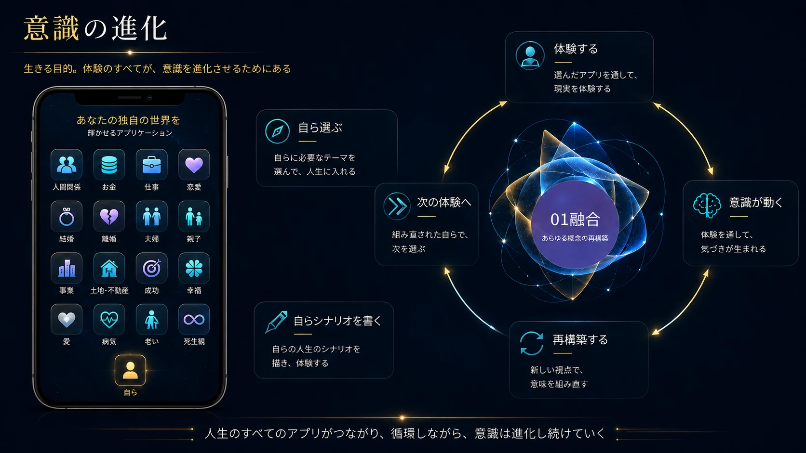
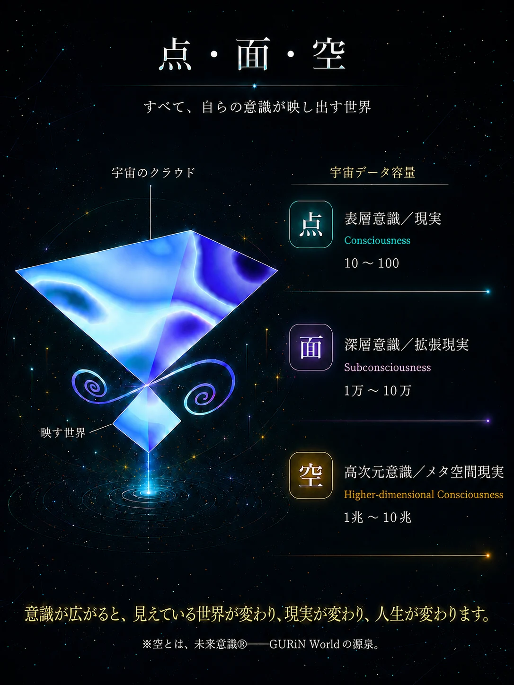
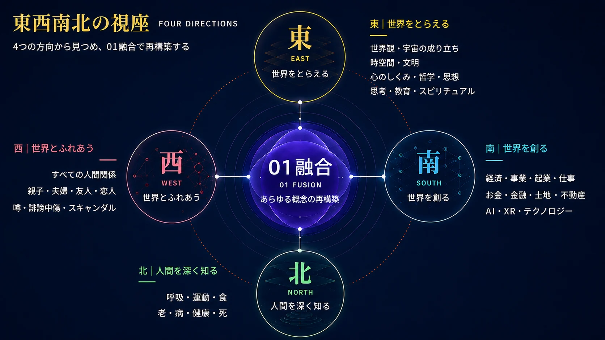

GURiN WORLD ｜ SESSION
GURiNの個人セッション
人間界を、脱出する。
「この世界は仮想現実かもしれない…」
そう気づき始めたのに、現実がまだ重い人へ。
幻を知った、その先へ。
世界観が変わると、現実が変わる。
気づきから進化、現実生成まで。
マボロシスト＝超リアリスト
いま見ている世界を、いつもとは違う位置から見る。
そして、見えてきた世界を、自らの現実としてどう生き、どう創っていくのか。
はじめての方へ
人間の常識を超え、宇宙の視座から現実を見る。
AI時代、これまでの古い価値観や固定観念が終わりを告げる中、
1いま見ている世界を、次元の違う位置から見る。解放／ダウンロード
2こびりついていた思考の癖を、再構築する。進化／インストール
3これまでの価値観や常識を超え、自らの新しい世界観をつくる。創造／生成
GURiN個人セッション
これまでの価値観や常識から、新たな水平線を手にする。
意識が進化する。
そして、生を謳歌する。
この世界は、幻。
人は毎日、自らの世界を生き、外に世界があって、自分がいて、相手がいる、と思い込んで生きています。
その固定された価値観、「当たり前」が、あなたの「リアル」をつくっています。
魂の進化に見られる差は
立つ位置に起こり
天の理にある
── 宇宙のクラウドからの一節
この幻の世界にも、意識が進化するためのアプリケーションがあります。
人間関係、お金、仕事、恋愛、結婚、家族、成功、幸福、愛、老い、病、死。
人生に現れる一つひとつのテーマを、自ら選び、体験し、意識を動かし、意識の進化を図っています。
そして、これまでの情報から、宇宙の情報に変えると、
仕事も。
お金も。
人間関係も。
生そのものが。
これまで自分を動かしていた価値観を解放し、新しい世界観をつくる。
そして、自分の世界を、自分で生成する。
GURiN個人セッションは、これまでの情報から、次元の違う宇宙の情報に変える、セッションです。

点・面・空
すべて、自らの意識（認識・感情・思考）が映し出す世界。
GURiNでいう「空」とは、宇宙にアクセスして35年にわたって受け取ってきたメッセージの数々。この星の計画と、この星に合わせた魂の進化について。
そして、その世界を捉えるための基本となるのが、「点・面・空」です。
点いま目の前にある現実
面目には見えない意識の領域
空そのさらに奥にある宇宙の回路図
見えている現実だけを扱うのではなく、その現実を生み出している意識、さらにその奥にある情報まで扱います。

そしてその先には、東西南北の視座という第二の地図が広がっています。
- 東は、世界そのものをとらえる。
- 南は、仕事・お金・テクノロジーなど、現実を動かす。
- 西は、人と人との掛け合いを解放する。
- 北は、自分自身の生・身体・老い・病・死を見直す。
人生に起こる出来事を、高次元・多次元の視座から再構築します。

点・面・空。
そして、東西南北。
GURiN個人セッションでは、この二つの地図を使い、目の前の現実から、その人自身の世界観まで扱います。
GURiNの個人セッションは、ここが違います
問題を解決する。その先へ。
解放と創造を、同時に動かします。
- 問題より、その先を見るGURiNのセッションは、問題にフォーカスしません。その現実をつくっている価値観や思考の位置を見ていきます。問題解決思考から、ダイレクトに創造へ。次の世界へ移るための視座を手にします。
- 解放と創造は、同時に動く古い価値観がほどけると、そこに新しい世界観が生まれます。解放と創造は、ひとつの動きです。
- 答えは、未来の自らが見つける一つの「正しい答え」を渡す場所ではありません。点から見る。面から見る。空から見る。視座が変わると、「こうするしかない」と思っていた現実に、別の選択肢が現れます。
- 現実まで、動かす気づきで終わらせず、受け取った情報を自分の世界観へ落とし込みます。そして、仕事、お金、人間関係、生き方。自分の現実そのものを、自分で生成するところまで扱います。
GURiNシフティングとは
世界を照らす光を、更新すること。光とは、新しい世界観です。
出来事を変えるのではなく、その出来事を見る光を変える。
世界観が変わると、現実が変わる。
ダウンロード・インストール・実装
気づいたことを、「わかった」で終わらせない。
ダウンロード｜解放
これまで自らの中に積んできた価値観、常識、思い込みを解放し、空きをつくる。
インストール｜進化
新しい見方・捉え方・世界観を、自らの中に取り込む。
実装｜創造
取り込んだものを現実の中で動かし、自らの世界として創っていく。
ただし、順番に進む手順ではありません。古いものが解放されると同時に、新しいものが生まれる。その動きの中で、インストールが起こり、実装へつながっていきます。
60分が、どう進むか
世界を見る位置が、動いていきます。
はじめの15分｜いま、どの視点で見ているか
はじめに、簡単な瞑目と呼吸からスタートします。意識を整え、自らの世界を見つめます。
今、あなたの世界はどう映っているのか。
気になっていること、変えたいこと、進めていきたいこと。
まだ言葉になっていないモヤモヤも、そのままお話しください。
対話をしながら、誰が、どこから、どう見ているのか。いま立っている位置を、共に見ていきます。
中の30分｜心の位置が、変わる
点から見る。面から見る。空から見る。
同じ現実を、違う層から同時に見ていきます。
対話を重ねながら、その現実をつくっている意識まで見ていきます。
ここで、「こうするしかない」と思っていたものを再考していき、ほどけた場所に、未来の視座を入れていきます。
終わりの15分｜自らの現実を創造する
見えてきた世界を、明日からの現実のどこに置くのか。
仕事、お金、人間関係、生き方。
いまの自分の現実に合わせて、持ち帰る形にして終了します。
セッションの録音は、後日お渡しします。
その日に受け取ったものを、あとから何度も聞き返してください。
聞き返すことで、自らの中へ落とし込み、日常の中で使えるものにしていきます。
FLOW
お申し込みから、受けたあとまで
申し込む前に、通る道の全体を。
STEP01
お申し込み
フォームから、ご希望の日時をお知らせください。
STEP02
お支払い
日程の候補とお振込先を、GURiNからご返信します。お振込み後、セッションの日程を確定します。
STEP03
事前の1問
「このセッションで解放したいこと、解きたい謎」をおうかがいします。当日までに、GURiNが読んでいます。
STEP04
セッション 60分
Google Meetで、GURiN本人と。簡単な瞑目と呼吸から始まります。
STEP05
録音を受け取る
後日お渡しします。あとから何度も聞き返し、日常の中で使えるものにしていきます。
VOICE
受講生の声
それぞれが壁に当たりながら、
自らの感覚を信じ、「何か違う」と生きてきた。
仕事も、年齢も、抱えてきたものも違う。
けれど、人生のどこかで、
これまでの見方では先へ進めなくなったとき、
GURiNを訪れています。
35年間。
さまざまな人の現実に触れてきました。
その中から、6人の声を紹介します。
01
医師・50代女性／メンタルクリニック開業医
「悩み」という概念が、消えた。
悩み
患者さんのことを自分のことのように抱えてしまい、眠れなくなることもありました。
医師として、患者さんの悩みにどこまで関わればいいのか、ずっと答えが出ませんでした。
そこから
セッションを受けて、「人を救う」は錯覚なのだと感じました。
人を変えることはできない。
だから、自らを変える方向へ。
そう考えるようになってから、揺れ動く気持ちが安定しました。
瞑想と呼吸を毎朝・毎晩続け、自ら実践しながら患者さんにも伝えています。
そして、いつの間にか、「悩み」という概念そのものが消えていました。
こんな方へ
人の悩みを背負いやすい仕事をしている方に。
02
専業主婦・子育て／30代女性
思い込んでいた世界から、外へ。
悩み
子どもが言うことを聞かず、苛立ってばかりいました。
「自分は子育てに向いていない」と思い込み、
「専業主婦」というレッテルにも苦しんでいました。
一方で、占いやスピリチュアルにも深く入り、
答えを外に探していました。
そこから
紹介で訪れたときは、GURiNのことも超能力系だと思っていました。
けれど、そこで向き合うことになったのは、
自分自身が持っていた「母親だからこうあるべき」という思い込みでした。
今は、子どもに苛立つことが減り、
子育てを「向いている・向いていない」で見ることもなくなりました。
こんな方へ
占いやスピリチュアルを渡り歩いて疲れた人にこそ、
一度、受けてみてほしいです。
03
IT企業勤務・40代男性／プログラマー
働く意味が、自分の中に戻ってきた。
悩み
コンピュータと向き合う毎日で眠りは浅く、
ストレスから過食することもありました。
何のために働いているのかも分からないまま、
生きることに疲れていました。
そこから
友人の紹介でGURiNを知り、
「未来の記憶を呼び起こす」という呼空という瞑想法を、1日3回続けるようになりました。
「睡眠は魂の移行の練習」と聞いてから、眠ることの意味そのものが変わり、眠りも深くなりました。
仕事も、遊びも、学びも、休むことも、
違いはなく、認識の違い。
そう腑に落ちたとき、
何のために働くのかを、自分の言葉で言えるようになりました。
こんな方へ
デジタルの世界で働きながら、
心も身体もすり減っている人に。
04
不動産会社経営・60代男性
仕事の基礎から、もう一度見直した。
悩み
若い頃から自己啓発に取り組み、
願望達成にも熱心でした。
ところが、不動産の仕事でトラブルが続き、
これまでの成功体験がまったく通用しなくなりました。
入院中のベッドで、途方に暮れていました。
そこから
自分の悩みを話そうと意気込んで個人セッションを受けました。
ところが、話は土地・不動産へ。
家や土地に情報があること。
物には空間に合う「位置」があること。
何十年もやってきた不動産の基礎そのものが、
別の角度から見えてきました。
その後、講座で「全天候型の思考」に触れ、
成功か失敗かで一喜一憂していた場所から、少しずつ離れていきました。
今は、仕事の組み立て方そのものが変わっています。
こんな方へ
これまでの成功法則だけでは、
もう先へ進めないと感じている経営者に。
05
一級建築士・インテリアデザイナー／50代女性
「こうあるべき」が、少しずつ薄くなった。
悩み
共同経営の事務所を離れて独立し、
離婚や別れも重なりました。
「夫とはこうあるべき」
「仕事はこうすべき」
そんな思いに、強く縛られていました。
そこから
GURiNとともに、空間そのものを見ていく考え方に触れました。
物には、空間に合う「位置」がある。
空間そのものの回路図をつくっていく。
建築の仕事をしてきた私には、
それが人生にも重なって見えました。
それまであれほどこだわっていた思いが、
少しずつ薄くなっていきました。
今は、イレギュラーを楽しみながら、
自ら選んだ道を生きています。
こんな方へ
「こうあるべき」という正解を守ることに、
少し疲れてしまった人に。
06
元中学校教師・50代女性
死は、絶望ではない。
悩み
教師という立場の中で、
ずっと「いい先生」であり続けようとしてきました。
家でも仕事を抱え、
「生徒のために」と頑張っていました。
50代になり、残りの人生を考えるようになった頃、
身内の死を通して絶望していた時期にGURiNを知りました。
そこから
最初は、GURiNの言葉を理解することができませんでした。
けれど、「存在しているだけでもいい」というところから、
少しずつ受け取れるようになりました。
半年後、突然、死について
「こういう感じなのか」と感じるようになりました。
言葉というより、その先にあるものを感じたのです。
今は、死は決して絶望ではないと感じながら、
「先生」である前に、ひとりの人として生きています。
こんな方へ
大切な人を見送り、
生きることと死ぬことについて立ち止まっている人に。
この6人を通して見えてきたこと
職業も、年齢も、抱えていたものも、
それぞれ違います。
けれど、共通しているのは、
自らの感覚を手放さず、
「何か違う」という感覚を持ち続けてきたこと。
そして、その先で、
これまでとは違う世界の見え方に出会っていること。
GURiNの個人セッションは、
悩みをなくすためだけの時間ではありません。
自らの見方が変わる。
そこから、現実の見え方が変わる。
そして、自らの現実をつくっていく。
そのための時間です。
35年間、
さまざまな人生を生きる人たちが、GURiNを訪れてきました。
個人セッションへ
60分 30,000円（税込）
90分 45,000円（税込）
あなた自身の現実を、
あなた自身の感覚から見ていく時間です。
個人セッションを申し込む
セッションの概要
| 受け方 | オンライン｜Google Meet
リンクを開くだけ。アプリは要りません |
|---|
| 担当 | GURiN本人
→ GURiNについて（note） |
|---|
| 時間 | 60分 または 90分 |
|---|
| 受けられる方 | どなたでも
『宇宙のクラウド』をお読みでなくても、お受けいただけます。 |
|---|
| セッション | 今扱いたいことを起点に、世界を見る位置を変えていきます。 |
|---|
| 初めての方へ | テーマが決まっていなくても、今感じていることから始められます。 |
|---|
| 料金 | 60分 30,000円（税込）
90分 45,000円（税込） |
|---|
| お申し込み |
1. お申し込みフォームから、ご希望の日時をお知らせください
2. 日程の候補と、お振込先をご返信します
3. ご入金の確認をもって、日程確定です
→ 規定・特定商取引法に基づく表記
|
|---|
料金
世界観が変わると、世界が変わる。
個人セッションは、単体でお受けいただけます。
| 個人セッション 60分 | 30,000円（税込） |
|---|
| 個人セッション 90分 | 45,000円（税込） |
|---|
| 含まれるもの | セッションの録音（後日お渡しします）
事前におうかがいする1問 |
|---|
お支払いは銀行振込（前払い）です。お申し込みのあとにご案内します。『宇宙のクラウド』は近日公開です。
→ 規定・特定商取引法に基づく表記
表示はすべて税込です。
こんな方へ
- これまでの価値観や常識に限界を感じている
- 同じところへ、何度も戻ってくる
- 人間関係が、いつも同じパターンになる
- お金と仕事の流れを、見直し変えていく
- AI時代の生き方を、自らの世界観から考えてみたい
- 気づきは増えた。現実は、そのままでいる
- 『宇宙のクラウド』を読んで、その先を自らの現実で動かしてみたい
- この幻の世界を、もっと自由に、もっと謳歌したい
『宇宙のクラウド』から、個人の現実へ
読むだけで、終わらせない。
『宇宙のクラウド』は、35年にわたって受け取ってきた未来意識メッセージから選んだ、天の泉が湧く「源泉」です。そこには、これまでの世界観とは違う「開眼世界観」が散りばめられています。
読んだあと、宇宙の叡智の光を浴びた後に残るのは、「では、自らの世界をどう変えていくのか」という問い。個人セッションでは、受け取り、読み解いたものを、自らの現実へつなげていきます。
GURiN本人のセッション
GURiN｜意識のデザイナー｜マボロシスト
大学を出て、経済系の出版社に4年。就職情報誌で大企業を担当し、100を超える社長室を訪問。どこにも大きな地図が貼られていた、拡大の時代でした。
その後、新聞社へ。社員向けに3年、週に一度のミニ講座と呼吸法を続け、新人には二日間のガイダンスも行う。毎週の講座を自ら録音し、起こして、月に一度の会報誌にまとめる。その会報誌の名前が『GURiN』です。問いと答えの形で組んでいました。
20代の後半、瞑想のなかで身体が消えて光に溶ける体験をする。安心。やすらぎ。生きていることが、ただうれしい。そこから、宇宙からのメッセージを受け取るようになる。
この体験は1995年、春秋社『私を変えた〈聖なる体験〉』（安藤治 著）に11ページにわたって収録されました。著者は医学博士で精神科医。日本トランスパーソナル心理学／精神医学会の初代会長です。
エジプトへ発ち、帰ってから会社を興す。29歳でした。以後30年、名前も顔も外には出さず、会員制で活動を続けてきました。代々木に場を持ち、やがて熱海にも。3つの拠点で深めています。
35年にわたり、3,000を超えるメッセージを受け取り、未来意識として体系にする。延べ8,000を超える個人セッション、5,000を超える講座。霊魂専科、黄金の里創世専科、ビジネス専科、未河塾、個人指導プログラム。20におよぶプログラム、240を超える題目を立ててきました。
そして2026年、GURiN World を開きました。
この世界は幻。それは終着点ではなく、スタート地点です。
セッションは、すべてGURiN本人が行います。
Google Meetで、顔を出してお会いします。
同じ方が何度も受けられるなかで、どんどんプログラムやアイテムが生まれていきました。
魂の特性に合わせ、意識を言葉にし、世界観を変え、現実との関係をつくり直してきました。その積み重ねを、今のあなたの現実に合わせて、宇宙のデータとして手渡します。
受けたあと
「こんな世界もある」へ。そして、「では、どんな世界を創る？」へ。
今まで見ていた世界が、違って見えてくる。「こうでなければ」という世界から、「こんな世界もある」へ。
世界観が変わると、現実が変わる。
そして、この幻の世界を、
もっと自由に、もっと謳歌する。
GURiN World の中で
宇宙のクラウド35年にわたって受け取ってきたメッセージ
↓
個人セッション受け取った世界を、自らの現実へ
↓
ダウンロード → インストール → 実装解放と創造が、同時に動く
↓
GURiN World世界観が変わると、世界が変わる
ここから先は、
あなたが創る世界です。
人間界を、脱出する。その一歩を、共に。
60分 30,000円／90分 45,000円（税込）
規定・特定商取引法に基づく表記